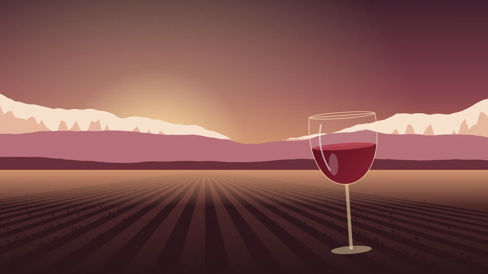

Descubra a alma das vinícolas de Mendoza com locais que falam a sua língua
Passeios de vinho e gastronomia em Luján de Cuyo, Maipú e Vale de Uco. Buscamos você no hotel e levamos às vinícolas que nós escolhemos.
- [nota] no Tripadvisor
- Guias em português, espanhol e inglês
- Transfer do seu hotel
O que nos faz diferentes
Guia local trilíngue
Nascemos aqui e contamos Mendoza em português, espanhol ou inglês.
Transporte privativo ida e volta
Buscamos você no hotel e deixamos lá no final. Sem dirigir, sem horários de ônibus.
Vinícolas escolhidas por nós
Visitamos cada vinícola antes de recomendar. Você só vai às que a gente adora.
Roteiro sob medida
Ajustamos vinícolas, horários e refeições ao seu grupo e ao seu ritmo.
Nossos passeios
Seis saídas para conhecer Mendoza pelos vinhos, pela comida e pela montanha. Toque em um passeio para ver o roteiro completo.
-

Luján de Cuyo, terra do Malbec
3 vinícolas
Degustação em duas vinícolas e almoço harmonizado na terceira.
A partir de USD [preço] por pessoa
-

Maipú, berço do vinho
2 vinícolas e 1 olivícola
Vinícolas históricas e boutique, olivícola e almoço harmonizado.
A partir de USD [preço] por pessoa
-

Vale de Uco, paisagem da cordilheira
Vinícolas premium
Vinícolas premium e almoço gourmet harmonizado em restaurante de vinícola.
A partir de USD [preço] por pessoa
-

Potrerillos
Represa e montanha
Natureza e montanha junto à represa, parada panorâmica e almoço leve.
A partir de USD [preço] por pessoa
-

Salentein
1 vinícola
Visita expressa à vinícola, degustação de 3 vinhos e galeria de arte.
A partir de USD [preço] por pessoa
-

Los Toneles
Vinícolas centenárias
Roteiro histórico por vinícolas centenárias, com almoço.
A partir de USD [preço] por pessoa
Nenhum passeio com esses filtros.

Montamos o seu passeio sob medida
Quer combinar regiões, incluir uma vinícola específica ou ir no seu ritmo? Conte o que você gosta, quantas pessoas são e a data. Enviamos um roteiro no mesmo dia.
Montar meu passeio pelo WhatsAppComo funciona
Reservar é simples e você faz tudo pelo celular.
Você nos escreve
Pelo WhatsApp ou pelo formulário. Conte a data, quantas pessoas e qual passeio interessa.
Confirmamos e você reserva com um sinal
Confirmamos a disponibilidade e o preço final. Com um sinal, sua vaga fica garantida.
Buscamos você no hotel
No dia do passeio, buscamos você na porta do hotel. Você só aproveita.
Quem somos
Somos locais, mas falamos a sua língua.
Somos uma equipe de guias nascidos em Mendoza. Conhecemos as vinícolas, as pessoas que fazem o vinho e os lugares onde nós mesmos comemos. [história da equipe a completar]
Idiomas que falamos
- Español
- English
- Português
![[foto real do guia a carregar]](../assets/img/guide-1-sm.webp)
[nome do guia]
[idiomas que fala]
![[foto real do guia a carregar]](../assets/img/guide-2-sm.webp)
[nome do guia]
[idiomas que fala]
![[foto real do guia a carregar]](../assets/img/guide-3-sm.webp)
[nome do guia]
[idiomas que fala]
O que dizem nossos viajantes
Avaliações reais publicadas no Tripadvisor.
-
[nota] · Tripadvisor
[avaliação real a carregar]
[nome] [país] -
[nota] · Tripadvisor
[avaliação real a carregar]
[nome] [país] -
[nota] · Tripadvisor
[avaliação real a carregar]
[nome] [país]
Ver todas as avaliações no Tripadvisor [URL de Tripadvisor]
Brindes, mesas longas e montanha
É assim que se vivem nossos passeios. Siga a gente para ver as saídas de cada semana.


Perguntas frequentes
Vocês me buscam no hotel?
Sim. Todos os passeios incluem transporte privativo ida e volta: buscamos e deixamos você na porta do seu hotel em Mendoza. [área de cobertura a confirmar]
Posso ir com crianças?
Sim. Para famílias recomendamos Bonfanti e Tempus Alba, que são tranquilas para ir com crianças. Informe as idades ao reservar.
Vocês têm opções vegetarianas?
Avise ao reservar e combinamos com cada vinícola. [confirmar opções vegetarianas, veganas e sem glúten]
E se chover?
As visitas e degustações acontecem dentro das vinícolas, então o passeio continua. [política em caso de mau tempo a completar]
Quais formas de pagamento vocês aceitam?
[formas de pagamento a completar]
Qual é a política de cancelamento?
[política de cancelamento a completar]
Quais idiomas os guias falam?
Português, espanhol e inglês. Você escolhe o idioma ao reservar.
Reserve o seu passeio
Preencha o formulário e respondemos com disponibilidade e preço. Se preferir, fale direto com a gente pelo WhatsApp.
- Formas de pagamento
- [formas de pagamento a completar]
- Política de cancelamento
- [política de cancelamento a completar]